谷歌Android6.0的系统限制了对外置SD卡的读写权限，但客户需要用到外置SD卡，系统提供商只提供了Media签名这种方式解决读写权限的问题。
在eclipse上时，采取的方式是，正式版本发布时，先用已有的签名打包apk，然后使用 "java -cp signApk.jar SignApk media.x509.pem media.pk8 未签名名称.apk 签名后的名称.apk" 命令进行Media签名,当前打包前，会在清单文件上加上“android:sharedUserId="android.media" ”，调试的时候，再去掉，极为不方便。
1、在网址为：https://github.com/getfatday/keytool-importkeypair 的GitHub上下载keytool-importkeypair
2、准备好项目的签名文件，如：PTM9100TestSign.jks（已有则取已有的，没有则生成新的签名文件）
3、编写签名脚本signature.sh，内容如下：
#!/bin/sh
# 转换平台签名命令
./keytool-importkeypair -k PTM9100TestSign.jks -p 111111 -pk8 media.pk8 -cert media.x509.pem -alias PTM9100
# PTM9100TestSign.jks : 签名文件
# 111111 : 签名文件密码
# media.pk8、media.x509.pem : Media签名文件
# PTM9100 : 签名文件别名
4、把下载下来的keytool-importkeypair文件，系统提供的签名文件media.pk8、media.x509.pem，项目本身的签名文件PTM9100TestSign.jks以及编写的脚本signature.sh放到同一目录下。如下图所：
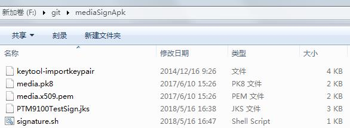
5、接下来是在win7系统下执行signature.sh脚本，生成新的已经带有Media签名的签名文件PTM9100TestSign.jks；
Windows下利用已经装好了的Git客户端执行.sh脚本的方法：
①、配置环境变量，把Git的安装路径下bin的绝对路径E:\Programs\Git\bin配置到path下
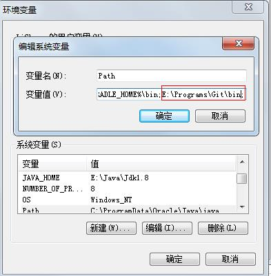
②、双击第4步同一目录下的签名文件signature.sh，弹窗：
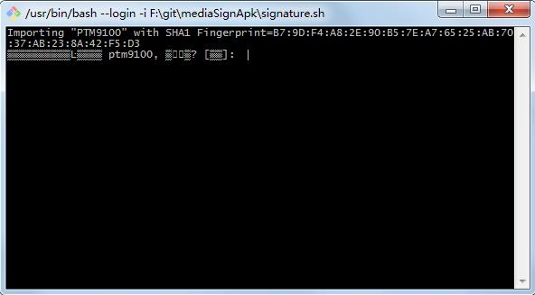
出现中文乱码，解决方法：打开git bash here，鼠标点击右键--> Options… --> Text --> Locale 选择zh_CN，Characterset 选择GBK，点击Apply，OK即可
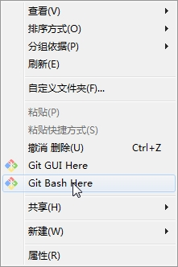
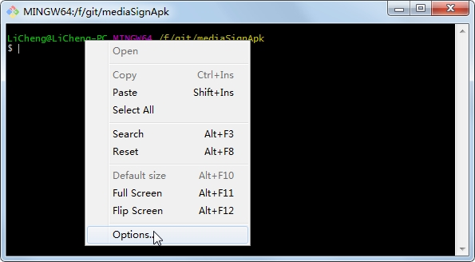
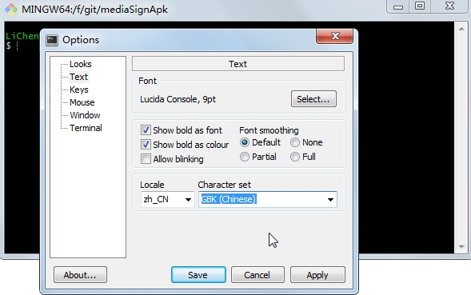
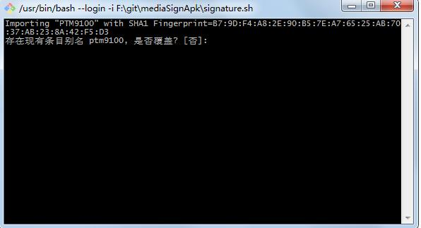
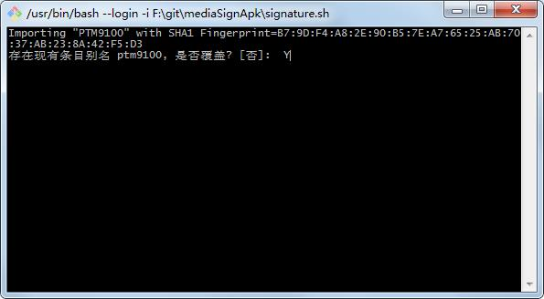
6、把上面生成的经过Media签名的签名文件以及相关的文件放到项目里保存，如下图所示：
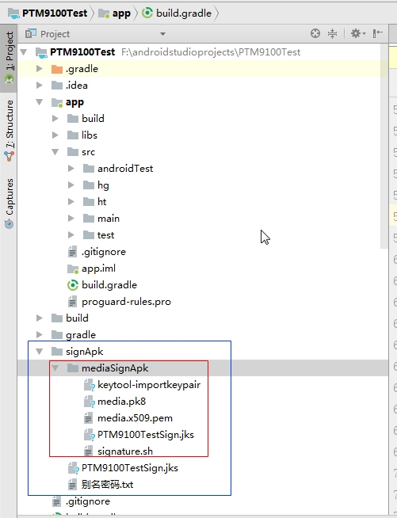
7、如果是多渠道，有些渠道需要Media签名，有些渠道不需要，则修改app下面的build.gradle文件；如果统一需要或者无多渠道的项目本身需要的话，直接使用Media签名的文件替换原来的签名文件就行。
①、原始签名，在build.gradle配置签名信息，然后在buildTypes中引用即可，如下图所示：
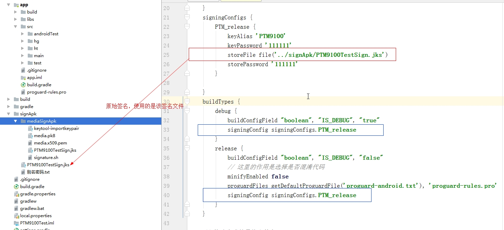
②、统一需要或者无多渠道的项目本身需要的Media签名的引入，如下图所示：
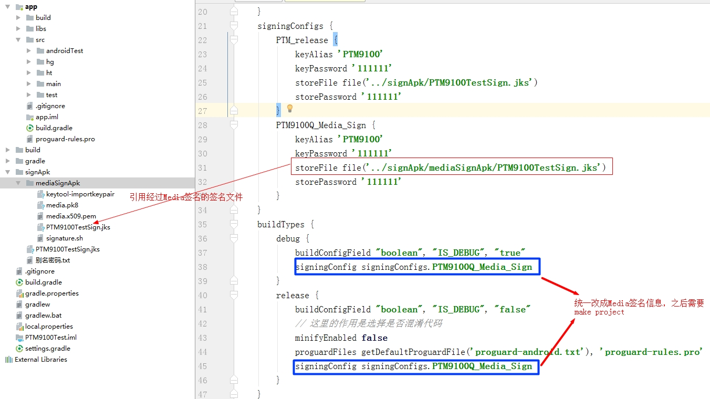
③、多渠道的话，把buildTypes中release里引用的签名信息移到各渠道上，各渠道可以分别引用自己的签名信息，渠道上引用的签名信息只对release有用，如果想要Debug也有用，把buildTypes中的debug签名信息改成 “signingConfig release.signingConfig” 即改成当前编译渠道的release的签名信息，如下图所示：
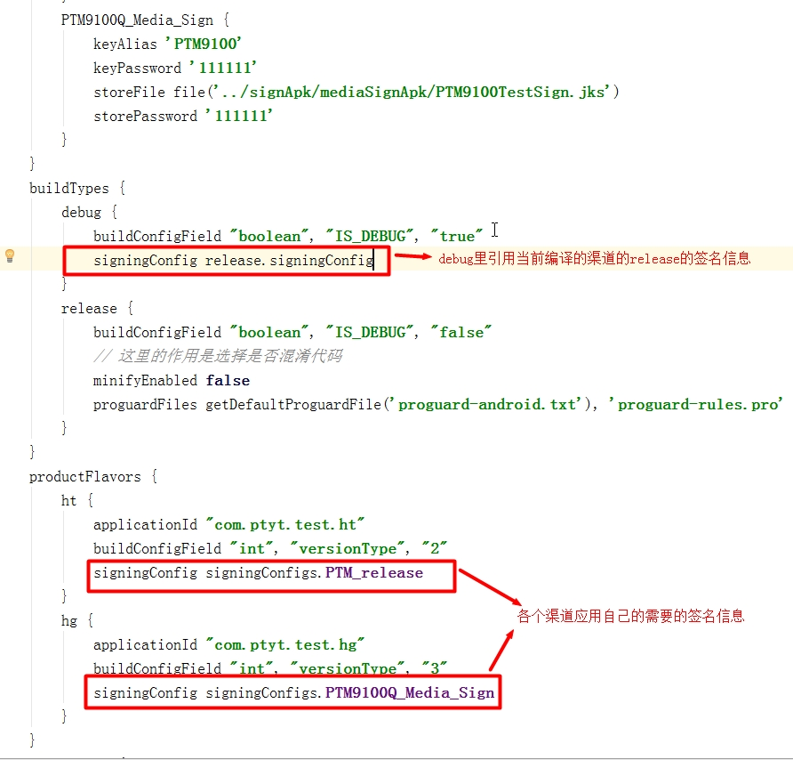
注意：在需要Media签名的渠道里的清单文件中，记得加上
“android:sharedUserId="android.media"
apply plugin: 'com.android.application'
//定义打包时间函数
def packageTime() {
return new Date().format("yyMMdd", TimeZone.getDefault())
}
android {
compileSdkVersion 26
defaultConfig {
applicationId "com.ptyt.test"
minSdkVersion 15
targetSdkVersion 26
versionCode 1
versionName "4.0.0.0"
//版本名后面添加一句话，意思就是flavor dimension 它的维度就是该版本号，这样维度就是都是统一的了
flavorDimensions "minSdkVersion"
testInstrumentationRunner "android.support.test.runner.AndroidJUnitRunner"
buildConfigField "int", "versionType", "1"
}
signingConfigs {
PTM_release {
keyAlias 'PTM9100'
keyPassword '111111'
storeFile file('../signApk/PTM9100TestSign.jks')
storePassword '111111'
}
PTM9100Q_Media_Sign {
keyAlias 'PTM9100'
keyPassword '111111'
storeFile file('../signApk/mediaSignApk/PTM9100TestSign.jks')
storePassword '111111'
}
}
buildTypes {
debug {
buildConfigField "boolean", "IS_DEBUG", "true"
signingConfig release.signingConfig
}
release {
buildConfigField "boolean", "IS_DEBUG", "false"
// 这里的作用是选择是否混淆代码
minifyEnabled false
proguardFiles getDefaultProguardFile('proguard-android.txt'), 'proguard-rules.pro'
}
}
productFlavors {
ht {
applicationId "com.ptyt.test.ht"
buildConfigField "int", "versionType", "2"
signingConfig signingConfigs.PTM_release
}
hg {
applicationId "com.ptyt.test.hg"
buildConfigField "int", "versionType", "3"
signingConfig signingConfigs.PTM9100Q_Media_Sign
}
}
sourceSets {
ht {
java.srcDirs = ['src/ht/java', 'src/ht/java/']
manifest.srcFile 'src/ht/AndroidManifest.xml'
}
}
// 修改生成的最终文件名
android.applicationVariants.all { variant ->
variant.outputs.all {
if (variant.buildType.name.equals('debug')) {
outputFileName = "${variant.productFlavors[0].name}_${variant.versionName}_debug.apk"
} else if (variant.buildType.name.equals('release')) {
outputFileName = "${variant.productFlavors[0].name}_${variant.versionName}_release.apk"
} else {
outputFileName = "app_${variant.productFlavors[0].name}.apk"
}
}
}
}
repositories {
flatDir {
dirs 'libs'
}
}
dependencies {
implementation fileTree(dir: 'libs', include: ['*.jar'])
implementation 'com.android.support:appcompat-v7:26.1.0'
implementation 'com.android.support.constraint:constraint-layout:1.0.2'
testImplementation 'junit:junit:4.12'
androidTestImplementation 'com.android.support.test:runner:1.0.1'
androidTestImplementation 'com.android.support.test.espresso:espresso-core:3.0.1'
implementation(name: 'uctsdk_v1.0', ext: 'aar')
implementation 'pub.devrel:easypermissions:1.1.1'
}